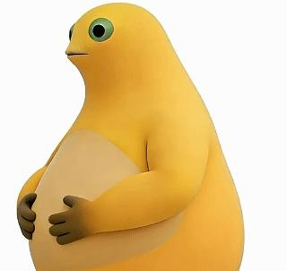
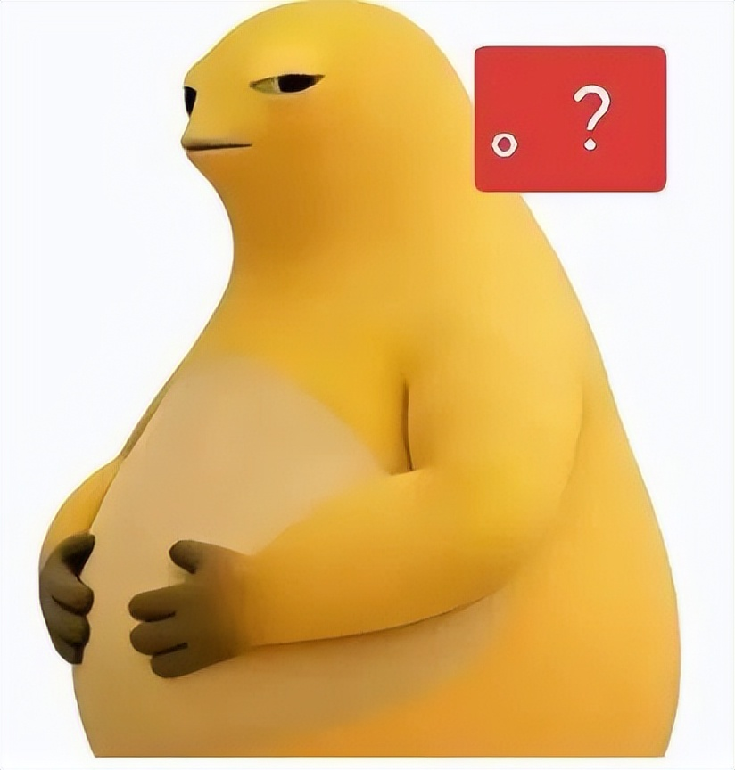
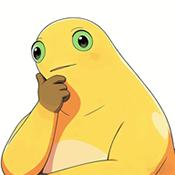
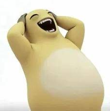
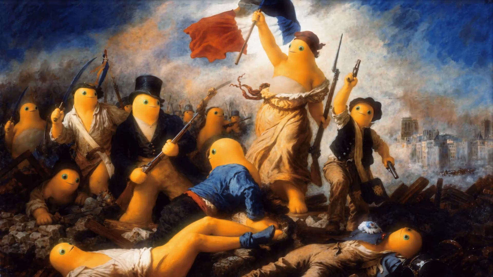
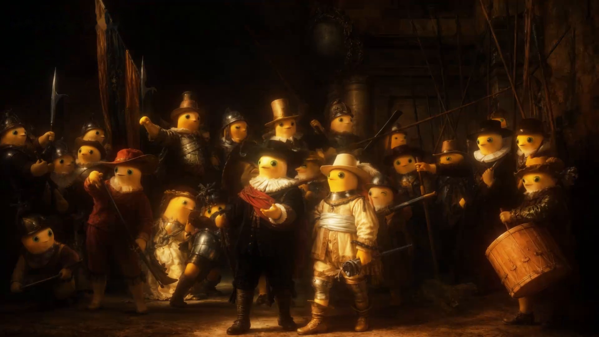
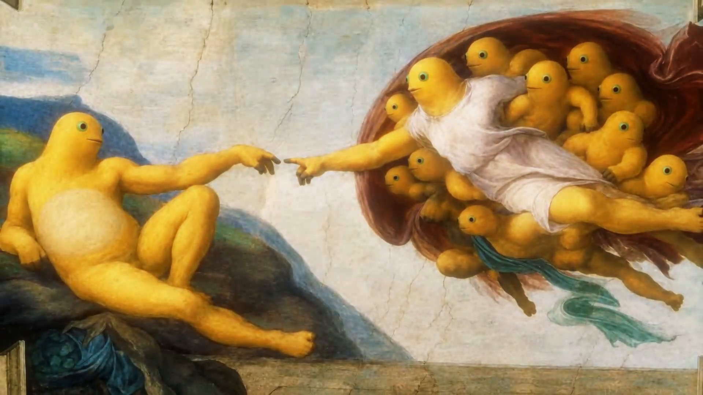

学而知不足 —— 校训由诺贝尔奖得主、名誉校长杨振宁先生题写（源自真实东莞理工学院）
一所「只存在于浏览器地址栏里」的奶龙主题大学。我们把互联网最治愈、最抽象的 奶蛙 请进了校园，也把它背后的 东莞理工学院 一并介绍给你。点一下，就能去真实的大学官网。

以下真实数据均取自东莞理工学院官网（www.dgut.edu.cn），数据截至 2026 年 6 月。
「东莞奶龙理工大学」是一所以 奶龙 / 奶蛙 为精神图腾的网络整活学府，它并不真实存在，却把一所真实存在的优秀高校——东莞理工学院（DGUT） 作为自己跳转的终点。
东莞理工学院坐落于粤港澳大湾区重要节点城市——广东东莞。学校 1990 年经广东省人民政府批准筹建，1992 年 4 月经原国家教育委员会批准成立，是东莞第一所公办本科院校，实行「省市共建、以市为主」的管理体制。
它是教育部首批卓越工程师教育培养计划试点高校、教育部首批高等教育综合改革试点高校、广东首批高水平理工科大学建设单位，连续 8 年位居中国应用型大学排行榜首，并跻身「2025 软科世界大学学术排名」全球 1000 强。1993 年至 2025 年，著名物理学大师 杨振宁先生担任名誉校长 32 年，并亲笔题写校训「学而知不足」。
学校现有 松山湖、莞城 两个校区，设有 20 个二级学院，建有与中国散裂中子源、松山湖材料实验室、华为等对接联动的学科体系，开设国内首个「杨振宁创新班」，与华为、西门子等共建 10 个现代产业学院。
📄 阅读原文（官网学校简介）↗坚持知行合一、立德树人，培养「勇于担当、善于学习、敢于超越」的高素质应用型创新人才——奶蛙表示：先学会大笑。
爱国奋斗、追求卓越；战略理念：守正出新、登高致远；价值追求：以卓越的创新教育与实践造福社会。
「笑而知有余」——学完东莞理工的知识，再收获奶蛙的快乐，人生圆满。
真实院校 20 个二级学院之外，为奶蛙增设以下整活学院（点击「官网入口」查看真实学院）。
研究「狂笑」这一人类顶级治愈行为。代表成果：奶蛙大笑藏馆。
涵盖平静、忧郁、天使、恶魔、神格、虚空等形态切换，培养全栈情绪容器。
把敲电子木鱼做成科研，为互联网提供源源不断的精神代餐与赛博功德。
研究奶龙与青蛙的 AI 融合畸变机理，探索紫皮人模式的下一次升级。
点击任意表情，奶蛙会为你「形态切换」。图片来自互联网开源二创素材（详见页脚来源说明）。



作为「互联网电子木鱼」，奶蛙标志性的捧腹狂笑是它的灵魂。本站把它供奉为校徽 C 位、精神图腾。
据本站（不实）统计，奶蛙已连续三年蝉联「最想抱走吉祥物」金奖，笑到肚子疼的师生满意度高达 99.9%。
网友把世界名画里的 C 位都换成了奶蛙，抽象又上头。



以下内容摘编自东莞理工学院官网新闻中心 / 通知公告，点击可跳转原文。
邀请中国高等教育学会原会长瞿振元等专家为学校发展把脉定向…
2024「小榄杯」全国书法小品展莞工巡展在莞工美术馆开幕…
松山湖、莞城两校区同步举行，2026 级新生展示军训成果…
1 金 7 银 10 铜，荣获「体育道德风尚奖」…
据本站（不实）统计，奶蛙今日已替全中国大学生敲电子木鱼 3,000,000 次。
想成为「东莞奶龙理工大学」的荣誉奶蛙？很简单——先去一所真实的优秀大学看看。这里没有分数线，只有通往 东莞理工学院 官网的一扇门。
🚪 立即前往 www.dgut.edu.cn这是一份纯静态、零后端、托管在 GitHub Pages 上的整活主页。它把网络热门抽象角色 奶龙 / 奶蛙 包装成一所大学，核心目的只有一个：把你安全、醒目地送到真实的 东莞理工学院官网（www.dgut.edu.cn）。
站内图片均为互联网开源二创素材（来源见页脚），并非 AI 生成，也非《奶龙》官方角色图。